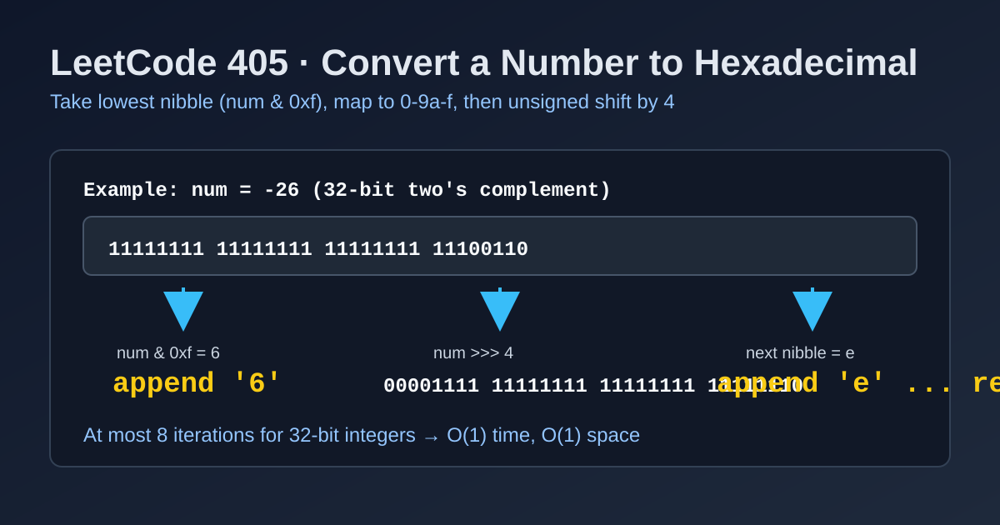

LeetCode 405: Convert a Number to Hexadecimal (32-bit Nibble Extraction)
LeetCode 405Bit ManipulationTwo's Complement32-bitToday we solve LeetCode 405 - Convert a Number to Hexadecimal.
Source: https://leetcode.com/problems/convert-a-number-to-hexadecimal/

English
Problem Summary
Given a 32-bit signed integer num, return its lowercase hexadecimal representation without leading zeros. For negative values, use two's complement representation.
Key Insight
A hexadecimal digit represents 4 bits (one nibble). Repeatedly take the lowest nibble via num & 0xf, map it to 0-9a-f, then perform an unsigned right shift by 4 bits.
Bit Strategy
- If num == 0, return "0".
- Use a digit table "0123456789abcdef".
- Loop while value is non-zero:
1) digit = value & 15
2) append mapped hex char
3) unsigned-shift value by 4.
- Reverse at the end.
Complexity Analysis
Time: O(1) (at most 8 iterations for 32-bit).
Space: O(1).
Common Pitfalls
- Using arithmetic right shift for negative numbers in languages where it keeps the sign forever.
- Forgetting special case num == 0.
- Returning uppercase letters when lowercase is required.
Reference Implementations (Java / Go / C++ / Python / JavaScript)
class Solution {
public String toHex(int num) {
if (num == 0) return "0";
char[] digits = "0123456789abcdef".toCharArray();
StringBuilder sb = new StringBuilder();
while (num != 0) {
sb.append(digits[num & 15]);
num >>>= 4;
}
return sb.reverse().toString();
}
}func toHex(num int) string {
if num == 0 {
return "0"
}
digits := "0123456789abcdef"
v := uint32(num)
out := make([]byte, 0, 8)
for v != 0 {
out = append(out, digits[v&15])
v >>= 4
}
for i, j := 0, len(out)-1; i < j; i, j = i+1, j-1 {
out[i], out[j] = out[j], out[i]
}
return string(out)
}class Solution {
public:
string toHex(int num) {
if (num == 0) return "0";
const string digits = "0123456789abcdef";
unsigned int v = static_cast<unsigned int>(num);
string out;
while (v != 0) {
out.push_back(digits[v & 15]);
v >>= 4;
}
reverse(out.begin(), out.end());
return out;
}
};class Solution:
def toHex(self, num: int) -> str:
if num == 0:
return "0"
digits = "0123456789abcdef"
v = num & 0xffffffff
out = []
while v:
out.append(digits[v & 15])
v >>= 4
return "".join(reversed(out))var toHex = function(num) {
if (num === 0) return "0";
const digits = "0123456789abcdef";
let out = "";
while (num !== 0) {
out += digits[num & 15];
num >>>= 4;
}
return out.split("").reverse().join("");
};中文
题目概述
给定一个 32 位有符号整数 num，返回其小写十六进制字符串（无多余前导零）。负数按二进制补码表示来转换。
核心思路
十六进制每一位对应 4 bit（一个 nibble）。每次取最低 4 位：num & 0xf，映射到 0-9a-f，再无符号右移 4 位，直到为 0。
位运算步骤
- 若 num == 0，直接返回 "0"。
- 使用映射表 "0123456789abcdef"。
- 循环处理中间值：
1) digit = value & 15
2) 追加对应字符
3) 无符号右移 4 位。
- 最后反转结果得到高位在前的表示。
复杂度分析
时间复杂度：O(1)（32 位最多 8 轮）。
空间复杂度：O(1)。
常见陷阱
- 对负数使用算术右移导致符号位持续补 1，循环无法结束。
- 漏掉 num == 0 的特判。
- 输出大写字母而非题目要求的小写。
多语言参考实现（Java / Go / C++ / Python / JavaScript）
class Solution {
public String toHex(int num) {
if (num == 0) return "0";
char[] digits = "0123456789abcdef".toCharArray();
StringBuilder sb = new StringBuilder();
while (num != 0) {
sb.append(digits[num & 15]);
num >>>= 4;
}
return sb.reverse().toString();
}
}func toHex(num int) string {
if num == 0 {
return "0"
}
digits := "0123456789abcdef"
v := uint32(num)
out := make([]byte, 0, 8)
for v != 0 {
out = append(out, digits[v&15])
v >>= 4
}
for i, j := 0, len(out)-1; i < j; i, j = i+1, j-1 {
out[i], out[j] = out[j], out[i]
}
return string(out)
}class Solution {
public:
string toHex(int num) {
if (num == 0) return "0";
const string digits = "0123456789abcdef";
unsigned int v = static_cast<unsigned int>(num);
string out;
while (v != 0) {
out.push_back(digits[v & 15]);
v >>= 4;
}
reverse(out.begin(), out.end());
return out;
}
};class Solution:
def toHex(self, num: int) -> str:
if num == 0:
return "0"
digits = "0123456789abcdef"
v = num & 0xffffffff
out = []
while v:
out.append(digits[v & 15])
v >>= 4
return "".join(reversed(out))var toHex = function(num) {
if (num === 0) return "0";
const digits = "0123456789abcdef";
let out = "";
while (num !== 0) {
out += digits[num & 15];
num >>>= 4;
}
return out.split("").reverse().join("");
};
Comments